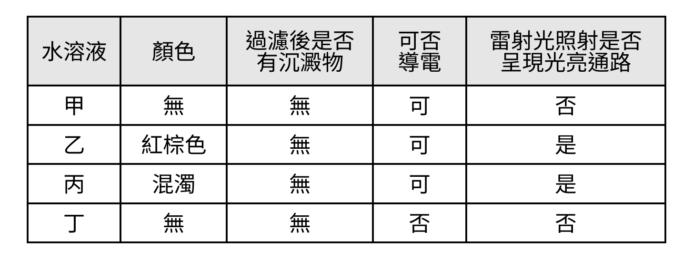
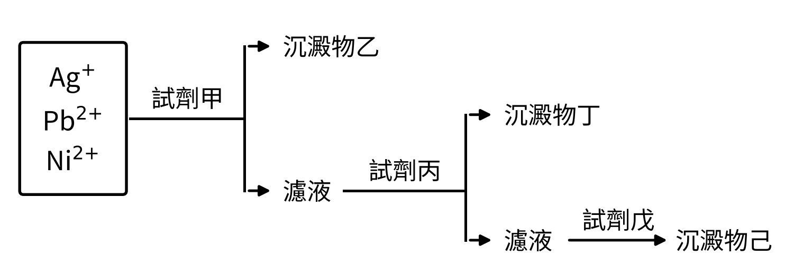

基礎題
下列鑑定物質的方法：①判斷物質是否含有碳酸鹽，可加入酸觀察是否產生氣體；②檢測銀離子，可加入溴離子，觀察是否有沉澱產生；③可利用沸點差異來判斷同分異構物的種類；④利用酸鹼指示劑判斷物質的酸鹼性；⑤層析法利用物質對固定相、溶劑之吸附力的差異，達成分離的效果，有幾項屬於化學性質的鑑定法？
- (A) 1
- (B) 2
- (C) 3
- (D) 4
- (E) 5
看答案與詳解
答案：(C)
① ✔ 碳酸鹽＋酸 → CO2（新物質），化性
② ✔ Ag+＋Br− → AgBr 沉澱，化性
③ ✘ 沸點是物性
④ ✔ 指示劑與 H+／OH− 反應變色，化性
⑤ ✘ 層析靠吸附力差異，沒有生成新物質，物性
共 3 項 → (C)
沉澱法是分析化學實驗用來判斷一些離子化合物中所含元素種類的方法。某一易溶於水的化合物，在其水溶液中加入稀硫酸或硝酸銀水溶液時，均可產生白色沉澱，則下列何者可能為該化合物？
- (A) ZnCl2
- (B) NH4NO3
- (C) CuCl2
- (D) KBr
- (E) BaCl2
看答案與詳解
答案：(E)
加 AgNO3 生成白色沉澱 → 陰離子為 Cl−（AgCl 白色；AgBr 為淡黃色）
(A)(C) ZnSO4、CuSO4 可溶 ✘ (B) 都不沉澱 ✘ (D) K2SO4 可溶，AgBr 淡黃 ✘
(E) ✔ BaSO4、AgCl 皆為白色沉澱
工業區排放的廢水中常含有毒的金屬離子，某工廠排放的廢水經採樣化驗，與 0.10 M 的 SO42− 或 Cl− 均不沉澱，但與 0.10 M 的 OH− 則會沉澱，此廢水採樣中所含的哪種金屬離子符合化驗結果？
- (A) Pb2+
- (B) Ag+
- (C) Cu2+
- (D) Ba2+
- (E) Na+
看答案與詳解
答案：(C)
(B) ✘ Ag+ 與 Cl− 生成 AgCl
(C) ✔ CuSO4、CuCl2 可溶；Cu2+＋2OH− → Cu(OH)2（藍色沉澱）
(D) ✘ Ba2+ 與 SO42− 生成 BaSO4
(E) ✘ Na+ 與三者都不沉澱
下列有關溶液的敘述，哪些正確？（多選）
- (A) 真溶液不一定可以導電，但溶液一定呈電中性
- (B) 當光線照射真溶液或膠體溶液，只有膠體溶液可顯現出廷得耳效應
- (C) 溶液有一定的組成、一定的沸點
- (D) 膠體溶液可用濾紙過濾分離溶質與溶劑
- (E) 18K 金為固態溶液，其成分中的金為溶劑
看答案與詳解
答案：(A)(B)(E)
(B) ✔ 膠粒（1～1000 nm）能散射光，真溶液的溶質粒子太小
(C) ✘ 溶液是混合物，組成可變，沸騰時溫度會改變
(D) ✘ 膠粒能穿過濾紙（不能穿過半透膜）
(E) ✔ 18K 金含金 18／24＝75％，金較多，為溶劑
一般自來水中，汞的殘留量必須在 0.002 ppm 以下，則 1 度自來水（1000 升）中最多含多少毫克汞？
- (A) 1.0
- (B) 2.0
- (C) 0.001
- (D) 0.002
- (E) 0.1
看答案與詳解
答案：(B)
汞＝109 mg×0.002／106＝2.0 mg
〔快解〕稀薄水溶液 1 ppm≒1 mg／L → 0.002 mg／L×1000 L＝2.0 mg
某公司出產的鹼性離子水中，鈣離子的含量是 1.2 ppm，其體積莫耳濃度是若干 M？（Ca＝40）
- (A) 1.2×10−5
- (B) 2.4×10−5
- (C) 3.0×10−5
- (D) 3.6×10−5
- (E) 4.0×10−5
看答案與詳解
答案：(C)
CM＝1.2×10−3÷40＝3.0×10−5 M
將五水合硫酸銅晶體（CuSO4．5H2O）250 克溶於 750 克的水中，則此溶液重量百分率濃度為若干？（CuSO4．5H2O＝250）
- (A) 33.3％
- (B) 25％
- (C) 16％
- (D) 9％
- (E) 3.5％
看答案與詳解
答案：(C)
溶液＝250＋750＝1000 g
W％＝160÷1000×100％＝16％
〔易錯〕用 250÷1000 得 25％，把結晶水算成溶質
某酒精水溶液中，酒精（C2H5OH）與水的莫耳數相等，則酒精的重量百分率為若干？（C＝12，H＝1，O＝16）
- (A) 71.9％
- (B) 62.3％
- (C) 50％
- (D) 37.7％
- (E) 28.1％
看答案與詳解
答案：(A)
W％＝46÷(46＋18)×100％≒71.9％
〔注意〕莫耳分率 0.5 不等於重量百分率 50％
若兩種溶液的重量莫耳濃度相同，則此兩種溶液的下列哪一種濃度必相同？（均為水溶液）
- (A) 莫耳分率（X）
- (B) 體積莫耳濃度（CM）
- (C) 體積百分率濃度（V％）
- (D) 重量百分率濃度（W％）
看答案與詳解
答案：(A)
(B)(C) 與溶液體積（密度）有關；(D) 與溶質分子量有關，都不一定相同
將 1.0 M 的 H2SO4(aq) 200 mL 和 2.0 M 的 H2SO4(aq) 300 mL 相混合後，若體積具加成性，混合後其體積莫耳濃度變為若干 M？
- (A) 1.6
- (B) 1.7
- (C) 1.8
- (D) 1.2
- (E) 1.4
看答案與詳解
答案：(A)
體積 0.200＋0.300＝0.500 L
CM＝0.80÷0.500＝1.6 M
市售的濃硝酸之重量百分率濃度為 72％，密度為 1.4 克／毫升。則該酸的體積莫耳濃度為何？（原子量：H＝1、N＝14、O＝16）
- (A) 16 M
- (B) 20 M
- (C) 23 M
- (D) 27.5 M
- (E) 30.3 M
看答案與詳解
答案：(A)
HNO3＝1400×72％＝1008 g，÷63＝16 mol
CM＝16 M
〔公式〕CM＝1000×d×W％÷分子量
進階題
今有四杯濃度極為稀薄的溶液分別為葡萄糖水、食鹽水、咖啡和氫氧化鐵溶液，有關四杯溶液的性質如下表，試問下列哪一個選項正確？

- (A) 甲為葡萄糖水，且為真溶液
- (B) 乙和丙在雷射光照射下顯現一光亮通路，此為布朗運動
- (C) 丙為咖啡，且為懸浮液
- (D) 丁為食鹽水，且為非電解質
- (E) 乙為氫氧化鐵溶液，且為膠體溶液
看答案與詳解
答案：(E)
乙：紅棕色、有光亮通路 → 氫氧化鐵膠體
丙：混濁、有光亮通路、過濾無沉澱 → 咖啡（膠體）
丁：無色、不導電 → 葡萄糖水
(A) ✘ 甲是食鹽水 (B) ✘ 光亮通路是廷得耳效應 (C) ✘ 過濾無沉澱，是膠體不是懸浮液
(D) ✘ 丁是葡萄糖水；食鹽是電解質 (E) ✔
水溶液中含 Ag+、Pb2+ 與 Ni2+ 陽離子，欲加入陰離子試劑，一次產生一種沉澱物，依下圖流程分離。試劑甲、試劑丙、試劑戊依序為下列何者？

- (A) NaCl、Na2SO4、Na2S
- (B) Na2SO4、NaCl、Na2S
- (C) NaCl、Na2S、Na2SO4
- (D) Na2SO4、Na2S、NaCl
- (E) Na2S、NaCl、Na2SO4
看答案與詳解
答案：(B)
SO42−：只沉澱 Pb2+（PbSO4）
Cl−：Ag+、Pb2+（AgCl、PbCl2）
S2−：三者都沉澱（Ag2S、PbS、NiS）
一次只沉澱一種 → 先用選擇性最高的：甲 Na2SO4（除 Pb2+）→ 丙 NaCl（除 Ag+）→ 戊 Na2S（NiS）→ (B)
將 800 mL 甲醇（密度為 0.80 g／mL）和 600 mL 水混合，所得的甲醇溶液濃度經測定為 15.0 M，試問甲醇和水混合前和混合後的總體積相差約若干 mL？（CH3OH＝32）
- (A) 0
- (B) 25
- (C) 33
- (D) 75
- (E) 67
看答案與詳解
答案：(E)
溶液體積＝20.0÷15.0＝1.333 L≒1333 mL
混合前 800＋600＝1400 mL → 相差 1400－1333≒67 mL
〔觀念〕甲醇與水間形成氫鍵，混合後體積縮小，不具加成性
將濃度 2 M 溶液一瓶，倒去半瓶再用蒸餾水加滿，拌勻後再倒去 1／4 瓶，然後以 3 M 的同種溶液加滿（假設體積有加成性）拌勻後濃度為多少 M？
- (A) 1.0
- (B) 2.5
- (C) 1.5
- (D) 0.5
- (E) 0.25
看答案與詳解
答案：(C)
倒去半瓶加水：溶質 2×0.5＝1 mol，濃度 1 M
倒去 1／4 瓶：剩 0.75 L，溶質 0.75 mol
加 3 M 溶液 0.25 L：再加 0.75 mol
最後 (0.75＋0.75)÷1＝1.5 M
有甲、乙、丙三瓶醋酸溶液（醋酸分子量＝60），各瓶之濃度分別為：(甲) 20％ 重量百分率；(乙) 250000 ppm（百萬分點濃度）；(丙) 4.0 M（比重 1.1），則各瓶醋酸溶液濃度之大小次序，何者正確？
- (A) 丙＞甲＞乙
- (B) 乙＞丙＞甲
- (C) 甲＞乙＞丙
- (D) 乙＞甲＞丙
- (E) 丙＞乙＞甲
看答案與詳解
答案：(B)
乙：250000 ppm＝250000／106×100％＝25％
丙：取 1 L 溶液 1100 g，醋酸 4.0×60＝240 g → 240÷1100×100％≒21.8％
乙 25％＞丙 21.8％＞甲 20％ → (B)
有 A 克重量百分率濃度為 15％ 的蔗糖溶液，若想將其重量百分率濃度變為 30％，可以採用下列哪些方法？（多選）
- (A) 蒸發掉溶劑的 1／2
- (B) 蒸發掉溶劑的 15％
- (C) 蒸發掉 A／2 克的溶劑
- (D) 加入 3A／14 克的蔗糖
- (E) 加入 3A／20 克的蔗糖
看答案與詳解
答案：(C)(D)
(A) ✘ 蒸發 0.425A g 水：0.15A÷0.575A≒26.1％
(B) ✘ 蒸發 0.1275A g 水：0.15A÷0.8725A≒17.2％
(C) ✔ 蒸發 0.5A g 水：0.15A÷0.5A＝30％
(D) ✔ 加蔗糖 x：(0.15A＋x)÷(A＋x)＝0.30 → x＝3A／14
(E) ✘ 加 3A／20：0.30A÷1.15A≒26.1％
實驗室取 0℃、1 atm 下 112.0 L 的 NH3(g) 溶於水形成 1.0 L 的溶液，已知此溶液的密度為 0.95 g／mL，則下列敘述哪些正確？（原子量 H＝1、N＝14、O＝16；標準狀態下氣體的莫耳體積為 22.4 L／mol）（多選）
- (A) 所含溶質的莫耳數為 5.0 莫耳
- (B) 所含溶劑重為 950 克
- (C) 所含溶劑莫耳數為 52.8 莫耳
- (D) 重量百分率濃度為 8.95％
- (E) 體積莫耳濃度為 5.0 M
看答案與詳解
答案：(A)(D)(E)
(B) ✘ 溶液＝1000 mL×0.95＝950 g，水＝950－85＝865 g
(C) ✘ 水＝865÷18≒48.1 mol（52.8 是把溶液 950 g 當成水）
(D) ✔ 85÷950×100％≒8.95％
(E) ✔ 5.0 mol÷1.0 L＝5.0 M
同為水溶液，下列敘述何者正確？（多選）
- (A) 溶液濃度以 Cm 或 CM 表示時，則溶液愈稀薄 CM 與 Cm 愈相近
- (B) 溶液愈濃時，則以 Cm 表示時，其值大於以 CM 表示時
- (C) Cm 愈大則莫耳分率愈大
- (D) Cm，CM 均受溫度改變的影響
- (E) 同溫時 1 M 葡萄糖溶液其濃度大於 1 m 葡萄糖溶液
看答案與詳解
答案：(A)(B)(C)(E)
(B) ✔ 一般水溶液 1 L 中的水少於 1 kg，愈濃差愈多，Cm＞CM
(C) ✔ 溶劑同為水：Cm 愈大，每 55.6 mol 水中的溶質愈多，X溶質 愈大
(D) ✘ Cm 只含質量與莫耳數，不隨溫度改變
(E) ✔ 1 M：1 L 溶液含葡萄糖 180 g，水少於 1000 g → 換算後大於 1 m
有甲、乙、丙、丁四瓶氫氧化鈉水溶液，各瓶之氫氧化鈉濃度分別為甲：12.5 M（比重 1.6）；乙：12.5 m；丙：35％ 重量百分率；丁：0.2 莫耳分率，則各瓶濃度之大小次序為何？（式量：氫氧化鈉＝40）
- (A) 甲 ＜ 乙 ＜ 丙 ＜ 丁
- (B) 乙 ＜ 甲 ＜ 丙 ＜ 丁
- (C) 乙 ＜ 丙 ＜ 甲 ＜ 丁
- (D) 甲 ＜ 乙 ＜ 丁 ＜ 丙
- (E) 甲 ＜ 丁 ＜ 乙 ＜ 丙
看答案與詳解
答案：(A)
甲：1 L 溶液 1600 g，NaOH 12.5×40＝500 g → 500÷1600＝31.25％
乙：1000 g 水含 NaOH 500 g → 500÷1500≒33.3％
丙：35％
丁：NaOH 0.2 mol（8 g）＋水 0.8 mol（14.4 g）→ 8÷22.4≒35.7％
甲＜乙＜丙＜丁 → (A)
〔驗算〕換成 Cm：甲 11.4 m、乙 12.5 m、丙 13.5 m、丁 13.9 m，順序相同
大考／素養題
▲ 第 1-21～1-22 題為題組：不肖商人用塑化劑（DEHP）代替起雲劑混入飲料中，引發社會不安，已知 DEHP 的分子式為 C24H38O4，政府相關部門抽驗結果顯示某飲料商品中 DEHP 的濃度為 7.8 ppm。
若換算成體積莫耳濃度，該飲料含 DEHP 的濃度相當多少 M？（假設該飲料的密度與水相同）
- (A) 1×10−5
- (B) 2×10−5
- (C) 3.9×10−5
- (D) 7.8×10−5
- (E) 1.96×10−4
看答案與詳解
答案：(B)
密度同水 → 7.8 ppm＝7.8 mg／L＝7.8×10−3 g／L
CM＝7.8×10−3÷390＝2×10−5 M
若人體對 DEHP 的最高耐受量為每天、每公斤的體重最多只能攝取 0.05 mg 的 DEHP，該飲料一瓶 350 mL，一 50 kg 的高中生每天喝該種飲料最少幾瓶，即會超過標準？
- (A) 1
- (B) 2
- (C) 3
- (D) 4
- (E) 5
看答案與詳解
答案：(A)
一瓶含 DEHP＝7.8 mg／L×0.350 L≒2.73 mg＞2.5 mg
喝 1 瓶就超過 → (A)
‰ 為千分之一濃度（重量），1‰ 意即每 1000 克溶液中含有 1 克溶質，日本鰻在河川中成長，將成熟時，洄游數千公里到馬里亞納群島海域產卵。孵化後，幼魚隨北赤道洋流與黑潮漂游到近岸，再游進河川。每年冬季都可見日本、韓國、臺灣、大陸等地漁民於沿岸捕撈鰻苗供養殖所需。鰻魚可感知鹽度以找尋適當河川。已知表層之黑潮水鹽度為 32‰，河水鹽度為 2‰，假設水體充分混合，當鰻魚所在水域之鹽度為 20‰ 時，黑潮水與河水混合的重量比例為何？
- (A) 3：2
- (B) 2：3
- (C) 2：1
- (D) 3：1
- (E) 1：2
看答案與詳解
答案：(A)
32x＋2y＝20(x＋y) → 12x＝18y → x：y＝3：2
〔快解〕與 20‰ 的差距：黑潮 12、河水 18 → 重量比＝18：12＝3：2
目前半導體工業常將砷（As）或硼（B）加入矽（Si）中，以製造 n 型或 p 型矽晶片，再用以製造二極體。現有 n 型矽晶片一片，其中砷濃度為 100.0 ppm，已知矽晶片的密度為 2.320 g／cm3，試問該矽晶片中，砷的體積莫耳濃度為多少 M？（As＝74.9）
- (A) 3.097×10−3
- (B) 8.259×10−3
- (C) 8.259×10−2
- (D) 3.097×10−2
- (E) 8.259×10−1
看答案與詳解
答案：(A)
As＝2320×100.0／106＝0.2320 g，÷74.9＝3.097×10−3 mol
CM＝3.097×10−3 M
〔易錯〕密度不是 1，不能直接用 1 ppm≒1 mg／L
從實驗室取出一瓶濃硫酸（H2SO4），在瓶外的標籤上有下列的資訊：①重量百分率濃度為 98％、②密度為 1.84 g／cm3、③分子量為 98。若要配製密度為 1.4 g／cm3、體積莫耳濃度為 4.6 M 的硫酸溶液 400 毫升，則哪些敘述正確？（多選）
- (A) 原來瓶中濃硫酸濃度為 18.4 M
- (B) 相當於濃度為 980000 ppm
- (C) 取濃度 98％ 的濃硫酸 100 毫升加入 300 公克蒸餾水中，稀釋成硫酸溶液 400 毫升
- (D) 配製硫酸溶液時，需將硫酸緩緩加入水中
- (E) 稀釋後重量百分濃度約 24.5％
看答案與詳解
答案：(A)(B)(D)
(B) ✔ 98％＝98／100×106＝980000 ppm
(C) ✘ 需 H2SO4 4.6×0.400＝1.84 mol → 濃硫酸 1.84÷18.4＝0.100 L＝100 mL（184 g）
稀溶液＝400×1.4＝560 g → 應加水 560－184＝376 g
(D) ✔ 濃硫酸溶於水大量放熱，要「酸入水」緩緩加入並攪拌
(E) ✘ 1.84×98≒180 g，180÷560×100％≒32.2％
甘油溶液：4.8 M 甘油〔C3H5(OH)3，分子量 92〕水溶液中水的莫耳分率為 0.884。
(1) 溶液中甘油的重量百分率為何？
(2) 溶液的重量莫耳濃度為何？
看答案與詳解
答案：(1) 40.1％ (2) 7.29 m
由 X水＝n水／(n水＋4.8)＝0.884 → n水＝4.8×0.884÷0.116≒36.6 mol＝658.4 g
(1) W％＝441.6÷(441.6＋658.4)×100％≒40.1％（溶液 1100 g，密度約 1.10 g／mL）
(2) Cm＝4.8÷0.6584 kg≒7.29 m
〔口訣〕先湊齊溶質、溶劑的質量與莫耳數，再代定義